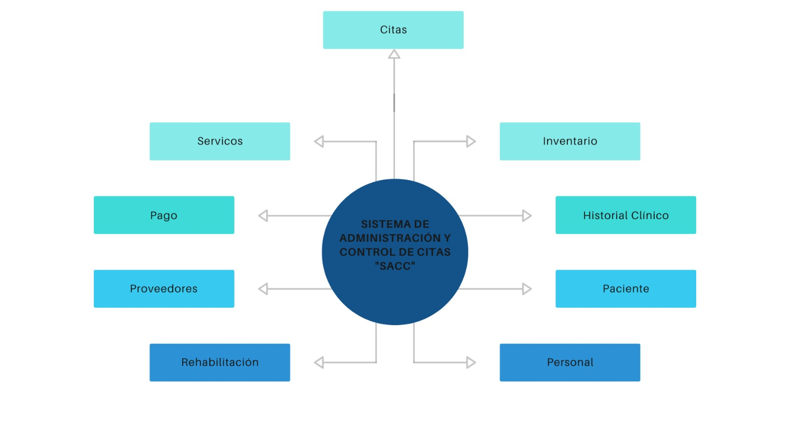
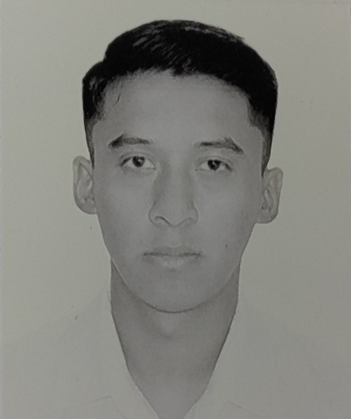

En el desarrollo del sistema se utilizó la estrategia de "divide y vencerás", que busca identificar unidades de desarrollo lo suficientemente concisas para ser trabajadas de manera independiente, pero que también sean fáciles de integrar en el sistema completo.
|  | |||
| Barrera Diaz Jose Axel | Diaz Quijano Marco Antonio | Lopez Cornejo Viridiana Josselyne | Rodríguez Henández Iván Yazeth |
| 22011550@itsoeh.edu.mx | 22011538@itsoeh.edu.mx | 22011469@itsoeh.edu.mx | 21011713@itsoeh.edu.mx |